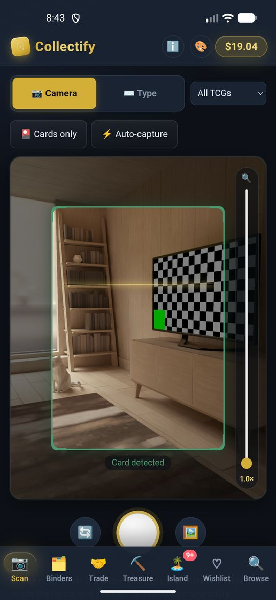
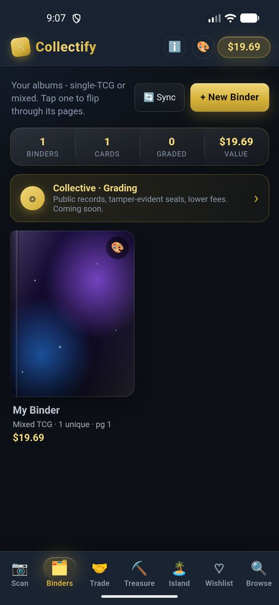
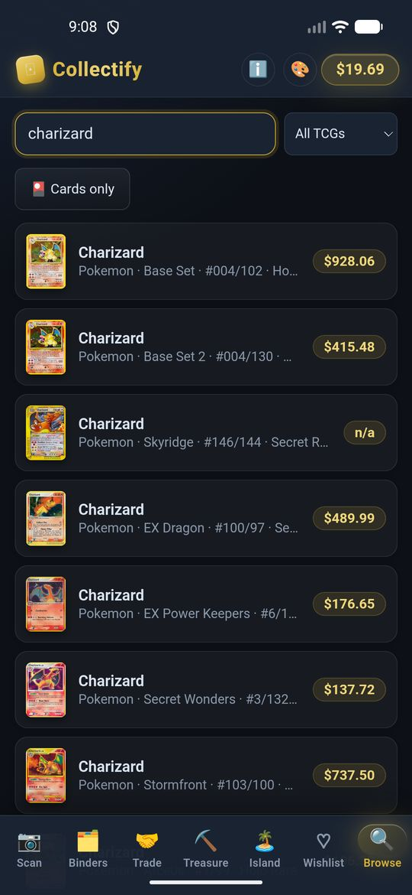
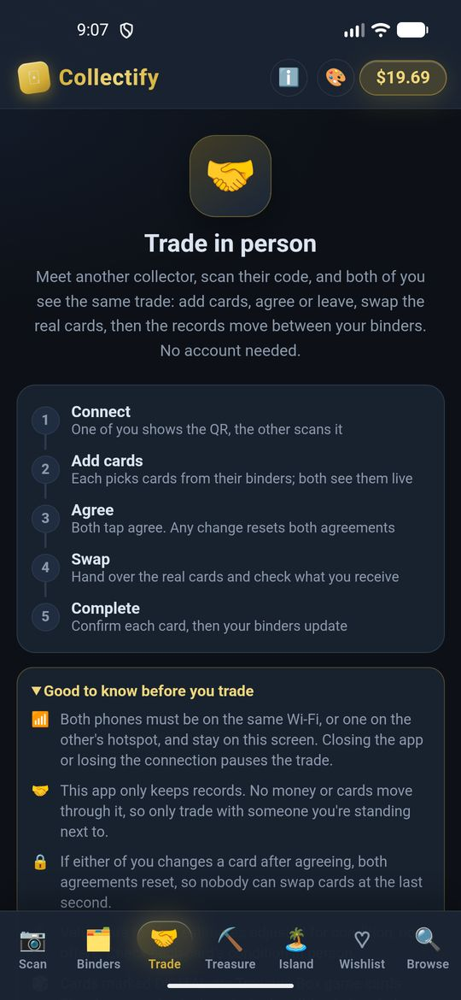
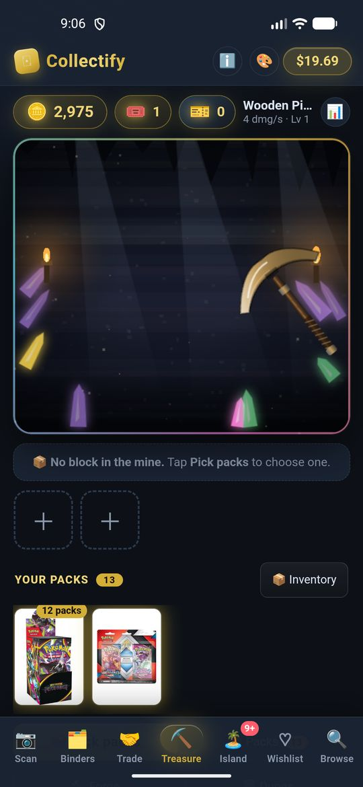
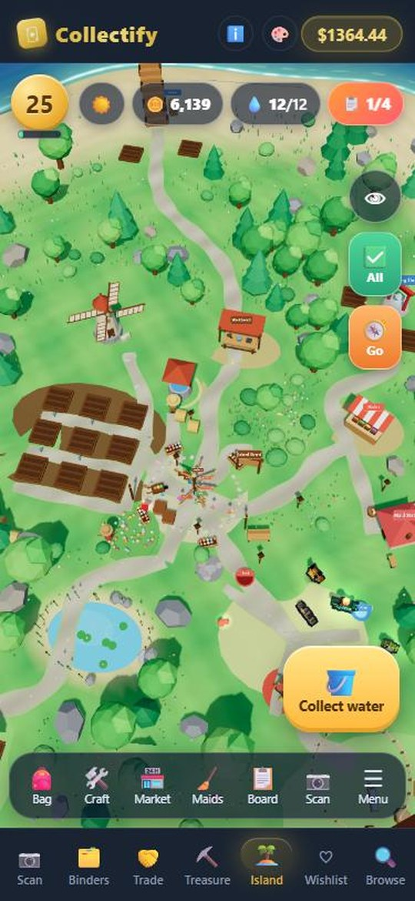
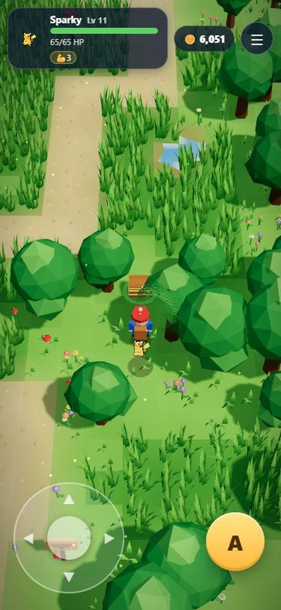
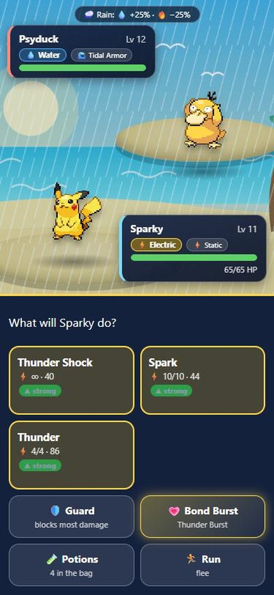

What Collectify does
One app for the whole hobby loop: find the card, file it, value it, show it off, swap it. Everything below works on both Android and iPhone, and nearly all of it works offline.
📷 Card scanner
Point, tap, done. It tells you when it isn't sure.
The camera reads a card with on-device OCR, runs several passes, and matches the words against the real card names for that game. It combines the fuzzy name match, where on the card the words were found, collector numbers and an artwork comparison into one confidence score.
- Nothing is uploaded: photos never leave your phone.
- On our own 54-card test of simulated phone photos it named the right card about 65% of the time (the earlier approach managed about 24%). Real results depend on light and focus.
- If it can't read the card it says so, rather than inventing a name.

📔 Collection and binders
Everything you own, with what it's worth.
- Add cards by search or scan, with quantity, condition and printing (normal, foil and so on).
- Page-by-page binders with a total value, search, sleeves, and covers you design from your own cards and stickers.
- A wishlist for what you're hunting, with the current price next to each card.
- Collection value, by game and by set, so you can see where the money is.
- No account. It's all in a database on your phone and survives app updates.

💲 Prices
Around half a million cards and products, offline.
- Market prices from tcgcsv.com, which republishes TCGplayer's catalog. They're estimates, never offers to buy or sell.
- Condition adjustments (near mint to damaged) and separate prices for foil and normal where they exist.
- The whole catalog is inside the app. Nothing to download on first run, and no signal needed at a card show.
- Press Sync prices when you want fresher numbers. Each release also ships a newer catalog, which merges in without touching your own data.

🔎 Inspect and grade
Your own estimate, labelled as such.
- Zoom into corners, edges and surface, measure centering, and record a pseudo-grade.
- It's clearly marked as your estimate: it isn't from a grading company.
- Attach the notes to the card so you remember why you scored it that way.

🤝 In-person trading
Two phones, one live trade, no server of ours.
- One person makes a trade room and shows a QR code. The other scans it on the same Wi-Fi.
- Both phones see the same offer live. Either side can agree or leave, and any change resets both agreements.
- A verification code on both screens confirms you're in the same room.
- Cards are marked physical or digital, and values for both sides are shown side by side.
- You swap the real cards; the app moves the records.

⛏️ Treasure Box
A mining game that can open a booster pack from any set.
- Start with a free, auto-equipped Wooden Pickaxe and enough coins to get going. Mine rock to earn coins and booster packs.
- Packs from every game. Where a real sealed booster pack exists in the catalog you get that. For every other set, Collectify generates a pack from the cards we have, with its own foil wrapper, a price based on the set's cards and difficulty to match.
- Every game has at least 10 packs. Games with only a few sets also get Mixed Packs, each drawing on a different slice of the game's cards, so there is always something to open.
- Slice the foil, pull the cards, tuck them into binders. Rarer cards flash. Pulls come from the real card list of that set.
- Keep unopened packs in your inventory, trade them, stack them, queue several.
- A free daily pack from any game, Mystery Blocks, a forge, prestige for badges and new features, and pickaxe upgrades.
- Game cards are clearly badged, never count toward your collection's value, and trade only as marked DIGITAL cards.

🏝️ Island Care
A two-minute check-in that isn't homework.
- A small 3D island to look after: grow berries, craft food and toys, and keep your Pokémon fed, watered and happy.
- Scanning cards feeds the island, but you can play without scanning.
- No pet ever dies. If you're away, they just wait.
- Your coins are shared with the Treasure Box.
- Optional reminders if you'd like a nudge.
- A Build menu that shows what everything needs. Five island areas (the Meadow, Orchard, Ranch, Harbor and Summit), the Nursery and every upgrade list their level, the building before them and their coin cost, with a tick for each one you've met and a lock on what you can't have yet. The Ranch and the Nursery open at level 10.

🌟 Evolutions
Look after a Pokémon long enough and it grows up.
- Bond now goes on past 10. At Bond 20 a Pokémon gets a special quest on the island board: craft its own one-of-a-kind item at the workbench (Bulbasaur's Verdant Seed Charm, Pikachu's Thunder Stone Shard, Onix's Metal Coat Ingot ...), then give it to the Pokémon.
- Somewhere between 10 and 24 hours later it evolves, even if the app is closed: it glows while it waits, and you're told when it happens.
- 26 evolutions across the roster; the three-stage families (Bulbasaur, Charmander, Squirtle, Oddish, Bellsprout, Poliwag, Geodude, Abra) get a second quest at Bond 30.
- Evolved Pokémon leave more valuable drops (+20% per evolution) and help their crops grow a little faster.
✅ Complete all
Quick play or leisurely play: your choice.
- One tap looks after the whole island: water and harvest the crops (and replant them), collect drops and finds, pick the orchard, repair toys, then feed, water, play with and pet every Pokémon, and fill the dishes with what's left. Water comes with the service, so there's no running to the well.
- It costs 100 coins, plus 50 more for each further use within 24 hours; 24 hours after the first use the price drops back to 100. You see exactly what it will do before you pay, and nothing is charged when there's nothing to do.
- Prefer to play it yourself? Ignore the button: everything still works by hand.
🎨 Decorate your island
91 designs, 550 colourways, and a look all your own.
- Put things exactly where you want them. Buy a piece, tap the ground to move it, nudge it, turn it and pick its colour, then place it. Move, recolour or store anything later.
- Eight collections: paths and ground, fences and walls, lights, plants and trees, furniture and garden, water features, statues and fun, and little buildings (a tent, a gazebo, a cabin, a lookout tower, a greenhouse).
- Lights glow at night with the lanterns; campfires flicker, fountains splash, balloons bob, wind chimes and flags sway.
- Change the whole island's look: eight ground colour schemes (Spring, Autumn, Twilight, Candy, Frost ...), falling petals, leaves or snow, bubbles and starlight, and a sky that can stay at sunrise, midday, golden hour or night.
- Move the food dish, water dish and toy box wherever you like (Decor → Furniture); they now start well apart from each other.
- More room as you level up and expand the island, a charm score that shows how lovely it is, and friends can leave decorations as gifts.
🌐 Visit friends' islands
Same Wi-Fi, one QR code, and you're walking around their island.
- Open your island (Island → Menu → Visit) and show the code. A friend scans it from the same menu or the Trade tab's scanner, and sees your island exactly as it is, decorations and all. Up to 4 visitors at once.
- Visitors can help: water thirsty crops, harvest ripe ones (you keep the crops, they keep a small share), pick up drops and finds, pet and feed your Pokémon and top up the dishes. A "Ways to help" list walks them to whatever needs doing.
- Leave something behind: gifts from their bag (food, toys, berries, even decorations), coins (up to 2,000 per visit), a note in your guestbook, or a wave. You see everything as it happens.
- Souvenirs: every island you visit adds a postcard to your collection, and helping earns a little XP and coins (capped each day, so it can't be farmed).
- You stay in charge. Your phone applies every request; visitors can't touch your bag, your coins or your settings, and you can ask anyone to leave or close the island at any time. Nothing leaves your local network, and nothing is sent to us.
🧭 Adventure mode
Take one Pokémon on a journey. Walk, explore, and see what's in the grass.
- A little 3D world, in the island's own style. Rolling ground, low-poly trees, grass made of real blades that sway in the wind and part around your feet, water that moves, and lighting that follows the time of day on your clock (with a lantern after dark). Walk with the on-screen stick or the keyboard, or just tap anywhere and your trainer walks there. Your partner trots along behind you.
- Five regions that each look and feel different: Meadow Trail (flowers, haystacks, butterflies of pollen), Pebble Hills (pines, crystals, cobbles), Tide Shore (palms, boardwalks, sea and beach umbrellas), Dream Grove (glowing giant mushrooms, fireflies, runestones) and Ember Crater (lava lakes, ash grass, dead trees with glowing tips, obsidian spires). Beat the Warden at the end of a trail to open the next.
- Tall grass starts wild battles. Trainers watch down a lit line of sight and challenge you when they spot you. Chests hide in side nooks. Trainers and chests come back every day.
- Rewards: coins for every win, a little bond with your partner, potions, medals, a field guide to fill in (shiny Pokémon count too!), and a chance at a pack for your Treasure Box from battles you win. Wardens always give one the first time.
- Opens at island level 4. Island visitors never see your adventures: they stay on your phone.

⚔️ Battles and health
Simple to pick up, with something to think about.
- Turn-based, with types and weather: six types with strengths and weaknesses, and each region has its own weather in battle (sun, dust wind, rain, mist, ashfall) that powers up one type and weakens another. Every move shows an arrow when it will be strong or weak.
- Moves grow with your bond: a quick move from the start, a signature move with an effect at Bond 3, a heavy move at Bond 8, and a Bond Burst at Bond 6: once a battle, a sure-hit finisher in your Pokémon's own type. Guard to blunt a big hit.
- Every type has an ability: Grass heals a little each round, Fire hits harder when it's nearly beaten, Water takes less damage, Electric paralyses whoever hits it, Rock hangs on once with 1 health, Psychic crits more.
- Use potions mid-battle (it costs your turn). Trainers carry a potion too, and drink it when they're nearly beaten.
- Care counts: a well-fed, happy Pokémon fights better, and a hungry or bored one won't set out.
- Health wears down as you walk and fight, and comes back at the Nursery ward on your island: rest there for free (about 2 to 4 hours, even with the app closed) or pay coins to heal at once. Or drink a Health Potion on the trail. If your partner runs out of strength it's carried home, and you keep everything you earned.

🧪 Potions
Brew them, carry them, and give your partner the edge.
- Brewed at the workbench from your berries (each potion is made from its own type's berries, and they unlock as you do): Health Potion, Super Potion, Cure Tonic, Power Tonic, Iron Tonic, Swift Tonic, Shield Elixir, Stamina Draught, Fortune Brew and Vitality Vitamin.
- Health potions heal your partner on the trail, on the island or in the middle of a battle. Cure Tonics clear burns, paralysis and lowered stats in battle.
- Tonics and elixirs boost attack, defence or speed, or add a shield, for your next 5 battles. Stamina Draught stops the weariness for 150 steps. Fortune Brew pays 50% more coins and doubles your chance of packs and potions for 5 battles.
- Vitality Vitamins permanently add 4 to a Pokémon's maximum health (up to 10 each).
- Found after battles: most wins have a chance to drop a Health Potion, trainers sometimes leave better ones, and every Warden gives you a stock.
Supported card games
Every game in the tcgcsv catalog is searchable, priced and can be added to your collection. Games with enough cards in a set also get booster packs in the Treasure Box.
And more
🔒 Private
No account, no ads, no tracking. Network use is limited to prices, card pictures and the update check. Details
📴 Works offline
The catalog, scanner (OCR runs on the phone), binders and games all work with no signal.
🔔 Reminders
Optional local notifications for Island Care and daily packs. They're scheduled on the phone, with no server involved.
🔄 Update check
In the app, ℹ️ → Check for updates compares your version and, on Android, your installed APK's checksum with the published one.
🖥️ Desktop twin
The same interface also runs on a desktop browser (a small Python server), which is how the mobile apps are tested against a full catalog.
🧪 Tested against each other
The iPhone server is a Swift port of the Android one, checked against answers recorded from it: search, prices, pack generation, even the generated wrapper art.
Ready? Install it in two minutes →